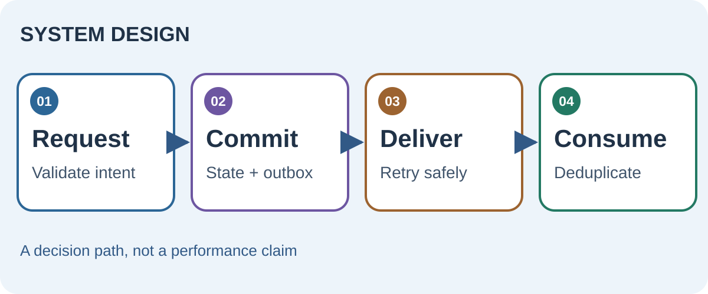

Separate the decision from the side effect
A synchronous call is easiest when the caller needs an immediate answer and the operation is short. A queue helps when work is slow, bursty or should continue after the caller disconnects. Neither removes failure. First decide which system owns the authoritative state, which actions can repeat, and what the caller sees when the outcome is uncertain.
Suppose an approval service records “approved” and then sends a notification. If the database succeeds but sending fails, the two systems disagree. If sending succeeds first but the transaction rolls back, the message lies.


Commit state and intent together
The transactional outbox pattern writes business state and an event row in the same database transaction. A separate worker publishes the event. This avoids a dual-write gap, but delivery may still repeat. The consumer needs an idempotency key or processed-message record so retries do not duplicate effects.
An approval request carries ID REQ-42. The service commits the approval and outbox event together. A worker publishes it twice after a timeout; the notification consumer recognizes REQ-42 and sends once.
Specify the uncertain outcome
Every boundary needs a recovery story: timeout, duplicate, partial work, and poison message. Use durable state and retry limits. If an external action cannot be rolled back, define a compensating action or human escalation rather than calling a timeout “failure” when the effect may already have happened.
Read the original sources
- AWS transactional outboxThe dual-write failure and idempotent consumer design.
- PostgreSQL transactionsAtomic transaction behavior for the local commit.